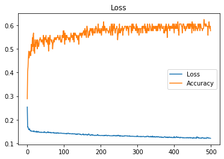

Epoch 266/500
- 6s - loss: 0.1322 - accuracy: 0.5962
Epoch 267/500
- 6s - loss: 0.1314 - accuracy: 0.5962
Epoch 268/500
- 6s - loss: 0.1318 - accuracy: 0.5962
Epoch 269/500
- 6s - loss: 0.1315 - accuracy: 0.5962
Epoch 270/500
- 6s - loss: 0.1307 - accuracy: 0.5865
Epoch 271/500
- 6s - loss: 0.1314 - accuracy: 0.5769
Epoch 272/500
- 6s - loss: 0.1316 - accuracy: 0.5962
Epoch 273/500
- 6s - loss: 0.1316 - accuracy: 0.5865
Epoch 274/500
- 6s - loss: 0.1298 - accuracy: 0.5962
Epoch 275/500
- 6s - loss: 0.1306 - accuracy: 0.5962
Epoch 276/500
- 6s - loss: 0.1305 - accuracy: 0.5769
Epoch 277/500
- 6s - loss: 0.1302 - accuracy: 0.5577
Epoch 278/500
- 6s - loss: 0.1304 - accuracy: 0.5865
Epoch 279/500
- 6s - loss: 0.1318 - accuracy: 0.5962
Epoch 280/500
- 6s - loss: 0.1297 - accuracy: 0.5962
Epoch 281/500
- 6s - loss: 0.1302 - accuracy: 0.5962
Epoch 282/500
- 6s - loss: 0.1290 - accuracy: 0.5962
Epoch 283/500
- 6s - loss: 0.1288 - accuracy: 0.5962
Epoch 284/500
- 6s - loss: 0.1299 - accuracy: 0.5769
Epoch 285/500
- 6s - loss: 0.1296 - accuracy: 0.5673
Epoch 286/500
- 6s - loss: 0.1290 - accuracy: 0.6058
Epoch 287/500
- 6s - loss: 0.1294 - accuracy: 0.5962
Epoch 288/500
- 6s - loss: 0.1300 - accuracy: 0.5769
Epoch 289/500
- 6s - loss: 0.1289 - accuracy: 0.6058
Epoch 290/500
- 6s - loss: 0.1291 - accuracy: 0.5865
Epoch 291/500
- 6s - loss: 0.1294 - accuracy: 0.5962
Epoch 292/500
- 6s - loss: 0.1290 - accuracy: 0.5962
Epoch 293/500
- 6s - loss: 0.1284 - accuracy: 0.5865
Epoch 294/500
- 6s - loss: 0.1290 - accuracy: 0.5865
Epoch 295/500
- 6s - loss: 0.1291 - accuracy: 0.5865
Epoch 296/500
- 6s - loss: 0.1285 - accuracy: 0.5769
Epoch 297/500
- 6s - loss: 0.1287 - accuracy: 0.5962
Epoch 298/500
- 6s - loss: 0.1288 - accuracy: 0.6058
Epoch 299/500
- 6s - loss: 0.1302 - accuracy: 0.5769
Epoch 300/500
- 6s - loss: 0.1278 - accuracy: 0.5962
Epoch 301/500
- 6s - loss: 0.1313 - accuracy: 0.5673
Epoch 302/500
- 6s - loss: 0.1295 - accuracy: 0.5865
Epoch 303/500
- 6s - loss: 0.1288 - accuracy: 0.5865
Epoch 304/500
- 6s - loss: 0.1280 - accuracy: 0.5865
Epoch 305/500
- 6s - loss: 0.1291 - accuracy: 0.5577
Epoch 306/500
- 6s - loss: 0.1285 - accuracy: 0.5865
Epoch 307/500
- 6s - loss: 0.1288 - accuracy: 0.5865
Epoch 308/500
- 6s - loss: 0.1280 - accuracy: 0.5865
Epoch 309/500
- 6s - loss: 0.1275 - accuracy: 0.5865
Epoch 310/500
- 6s - loss: 0.1296 - accuracy: 0.5673
Epoch 311/500
- 6s - loss: 0.1282 - accuracy: 0.5865
Epoch 312/500
- 6s - loss: 0.1279 - accuracy: 0.5865
Epoch 313/500
- 6s - loss: 0.1290 - accuracy: 0.5865
Epoch 314/500
- 6s - loss: 0.1280 - accuracy: 0.5962
Epoch 315/500
- 6s - loss: 0.1283 - accuracy: 0.5673
Epoch 316/500
- 6s - loss: 0.1288 - accuracy: 0.5962
Epoch 317/500
- 6s - loss: 0.1296 - accuracy: 0.5962
Epoch 318/500
- 6s - loss: 0.1285 - accuracy: 0.5962
Epoch 319/500
- 6s - loss: 0.1282 - accuracy: 0.5865
Epoch 320/500
- 6s - loss: 0.1270 - accuracy: 0.5865
Epoch 321/500
- 6s - loss: 0.1269 - accuracy: 0.6058
Epoch 322/500
- 6s - loss: 0.1276 - accuracy: 0.5769
Epoch 323/500
- 6s - loss: 0.1279 - accuracy: 0.5962
Epoch 324/500
- 6s - loss: 0.1289 - accuracy: 0.5673
Epoch 325/500
- 6s - loss: 0.1272 - accuracy: 0.5865
Epoch 326/500
- 6s - loss: 0.1288 - accuracy: 0.5769
Epoch 327/500
- 6s - loss: 0.1293 - accuracy: 0.5673
Epoch 328/500
- 6s - loss: 0.1304 - accuracy: 0.6058
Epoch 329/500
- 6s - loss: 0.1288 - accuracy: 0.5962
Epoch 330/500
- 6s - loss: 0.1279 - accuracy: 0.5769
Epoch 331/500
- 6s - loss: 0.1298 - accuracy: 0.5865
Epoch 332/500
- 6s - loss: 0.1275 - accuracy: 0.5769
Epoch 333/500
- 6s - loss: 0.1276 - accuracy: 0.5769
Epoch 334/500
- 6s - loss: 0.1273 - accuracy: 0.6058
Epoch 335/500
- 6s - loss: 0.1266 - accuracy: 0.5962
Epoch 336/500
- 6s - loss: 0.1278 - accuracy: 0.5962
Epoch 337/500
- 6s - loss: 0.1295 - accuracy: 0.5865
Epoch 338/500
- 6s - loss: 0.1277 - accuracy: 0.5769
Epoch 339/500
- 6s - loss: 0.1264 - accuracy: 0.5769
Epoch 340/500
- 6s - loss: 0.1287 - accuracy: 0.5865
Epoch 341/500
- 6s - loss: 0.1270 - accuracy: 0.6058
Epoch 342/500
- 6s - loss: 0.1306 - accuracy: 0.5769
Epoch 343/500
- 6s - loss: 0.1261 - accuracy: 0.5962
Epoch 344/500
- 6s - loss: 0.1266 - accuracy: 0.5769
Epoch 345/500
- 6s - loss: 0.1281 - accuracy: 0.5962
Epoch 346/500
- 6s - loss: 0.1269 - accuracy: 0.5962
Epoch 347/500
- 6s - loss: 0.1262 - accuracy: 0.5865
Epoch 348/500
- 6s - loss: 0.1286 - accuracy: 0.5865
Epoch 349/500
- 6s - loss: 0.1271 - accuracy: 0.5962
Epoch 350/500
- 6s - loss: 0.1256 - accuracy: 0.5865
Epoch 351/500
- 6s - loss: 0.1266 - accuracy: 0.5962
Epoch 352/500
- 6s - loss: 0.1278 - accuracy: 0.5769
Epoch 353/500
- 6s - loss: 0.1268 - accuracy: 0.5962
Epoch 354/500
- 6s - loss: 0.1281 - accuracy: 0.5769
Epoch 355/500
- 6s - loss: 0.1258 - accuracy: 0.5962
Epoch 356/500
- 6s - loss: 0.1272 - accuracy: 0.5769
Epoch 357/500
- 6s - loss: 0.1277 - accuracy: 0.5962
Epoch 358/500
- 6s - loss: 0.1282 - accuracy: 0.6058
Epoch 359/500
- 6s - loss: 0.1260 - accuracy: 0.6058
Epoch 360/500
- 6s - loss: 0.1262 - accuracy: 0.5865
Epoch 361/500
- 6s - loss: 0.1267 - accuracy: 0.5962
Epoch 362/500
- 6s - loss: 0.1254 - accuracy: 0.6058
Epoch 363/500
- 6s - loss: 0.1268 - accuracy: 0.5769
Epoch 364/500
- 6s - loss: 0.1257 - accuracy: 0.5865
Epoch 365/500
- 6s - loss: 0.1268 - accuracy: 0.5962
Epoch 366/500
- 6s - loss: 0.1256 - accuracy: 0.6058
Epoch 367/500
- 6s - loss: 0.1266 - accuracy: 0.5962
Epoch 368/500
- 6s - loss: 0.1242 - accuracy: 0.5865
Epoch 369/500
- 6s - loss: 0.1252 - accuracy: 0.5865
Epoch 370/500
- 6s - loss: 0.1253 - accuracy: 0.5865
Epoch 371/500
- 6s - loss: 0.1246 - accuracy: 0.5962
Epoch 372/500
- 6s - loss: 0.1240 - accuracy: 0.5865
Epoch 373/500
- 6s - loss: 0.1260 - accuracy: 0.5673
Epoch 374/500
- 6s - loss: 0.1268 - accuracy: 0.5769
Epoch 375/500
- 6s - loss: 0.1270 - accuracy: 0.5673
Epoch 376/500
- 6s - loss: 0.1277 - accuracy: 0.5962
Epoch 377/500
- 6s - loss: 0.1259 - accuracy: 0.5769
Epoch 378/500
- 6s - loss: 0.1240 - accuracy: 0.5962
Epoch 379/500
- 6s - loss: 0.1252 - accuracy: 0.6058
Epoch 380/500
- 6s - loss: 0.1264 - accuracy: 0.5769
Epoch 381/500
- 6s - loss: 0.1240 - accuracy: 0.5962
Epoch 382/500
- 6s - loss: 0.1261 - accuracy: 0.5481
Epoch 383/500
- 6s - loss: 0.1261 - accuracy: 0.5865
Epoch 384/500
- 6s - loss: 0.1235 - accuracy: 0.5865
Epoch 385/500
- 6s - loss: 0.1245 - accuracy: 0.5962
Epoch 386/500
- 6s - loss: 0.1262 - accuracy: 0.6058
Epoch 387/500
- 6s - loss: 0.1253 - accuracy: 0.5865
Epoch 388/500
- 6s - loss: 0.1267 - accuracy: 0.5962
Epoch 389/500
- 6s - loss: 0.1252 - accuracy: 0.5769
Epoch 390/500
- 6s - loss: 0.1248 - accuracy: 0.5962
Epoch 391/500
- 6s - loss: 0.1256 - accuracy: 0.5865
Epoch 392/500
- 6s - loss: 0.1243 - accuracy: 0.5962
Epoch 393/500
- 6s - loss: 0.1239 - accuracy: 0.5962
Epoch 394/500
- 6s - loss: 0.1255 - accuracy: 0.5865
Epoch 395/500
- 6s - loss: 0.1245 - accuracy: 0.5865
Epoch 396/500
- 6s - loss: 0.1238 - accuracy: 0.5962
Epoch 397/500
- 6s - loss: 0.1238 - accuracy: 0.6058
Epoch 398/500
- 6s - loss: 0.1247 - accuracy: 0.5865
Epoch 399/500
- 6s - loss: 0.1235 - accuracy: 0.6058
Epoch 400/500
- 6s - loss: 0.1256 - accuracy: 0.5865
Epoch 401/500
- 6s - loss: 0.1280 - accuracy: 0.5673
Epoch 402/500
- 6s - loss: 0.1234 - accuracy: 0.5962
Epoch 403/500
- 6s - loss: 0.1250 - accuracy: 0.6058
Epoch 404/500
- 6s - loss: 0.1238 - accuracy: 0.5865
Epoch 405/500
- 6s - loss: 0.1242 - accuracy: 0.5962
Epoch 406/500
- 6s - loss: 0.1251 - accuracy: 0.5865
Epoch 407/500
- 6s - loss: 0.1279 - accuracy: 0.6058
Epoch 408/500
- 6s - loss: 0.1272 - accuracy: 0.5865
Epoch 409/500
- 6s - loss: 0.1243 - accuracy: 0.5962
Epoch 410/500
- 6s - loss: 0.1261 - accuracy: 0.5865
Epoch 411/500
- 6s - loss: 0.1246 - accuracy: 0.6154
Epoch 412/500
- 6s - loss: 0.1252 - accuracy: 0.5769
Epoch 413/500
- 6s - loss: 0.1248 - accuracy: 0.5769
Epoch 414/500
- 6s - loss: 0.1258 - accuracy: 0.5577
Epoch 415/500
- 6s - loss: 0.1235 - accuracy: 0.6058
Epoch 416/500
- 6s - loss: 0.1234 - accuracy: 0.6058
Epoch 417/500
- 6s - loss: 0.1225 - accuracy: 0.6058
Epoch 418/500
- 6s - loss: 0.1255 - accuracy: 0.6058
Epoch 419/500
- 6s - loss: 0.1251 - accuracy: 0.6058
Epoch 420/500
- 6s - loss: 0.1237 - accuracy: 0.6058
Epoch 421/500
- 6s - loss: 0.1240 - accuracy: 0.5962
Epoch 422/500
- 6s - loss: 0.1239 - accuracy: 0.5962
Epoch 423/500
- 6s - loss: 0.1238 - accuracy: 0.5673
Epoch 424/500
- 6s - loss: 0.1244 - accuracy: 0.5962
Epoch 425/500
- 6s - loss: 0.1221 - accuracy: 0.6058
Epoch 426/500
- 6s - loss: 0.1239 - accuracy: 0.6058
Epoch 427/500
- 6s - loss: 0.1239 - accuracy: 0.6058
Epoch 428/500
- 6s - loss: 0.1230 - accuracy: 0.5865
Epoch 429/500
- 6s - loss: 0.1225 - accuracy: 0.5962
Epoch 430/500
- 6s - loss: 0.1231 - accuracy: 0.5962
Epoch 431/500
- 6s - loss: 0.1229 - accuracy: 0.5769
Epoch 432/500
- 6s - loss: 0.1230 - accuracy: 0.5769
Epoch 433/500
- 6s - loss: 0.1232 - accuracy: 0.5865
Epoch 434/500
- 6s - loss: 0.1230 - accuracy: 0.5962
Epoch 435/500
- 6s - loss: 0.1245 - accuracy: 0.5865
Epoch 436/500
- 6s - loss: 0.1224 - accuracy: 0.5962
Epoch 437/500
- 6s - loss: 0.1235 - accuracy: 0.6058
Epoch 438/500
- 6s - loss: 0.1243 - accuracy: 0.5962
Epoch 439/500
- 6s - loss: 0.1228 - accuracy: 0.6058
Epoch 440/500
- 6s - loss: 0.1241 - accuracy: 0.5865
Epoch 441/500
- 6s - loss: 0.1223 - accuracy: 0.6058
Epoch 442/500
- 6s - loss: 0.1236 - accuracy: 0.5865
Epoch 443/500
- 6s - loss: 0.1239 - accuracy: 0.6058
Epoch 444/500
- 6s - loss: 0.1244 - accuracy: 0.5865
Epoch 445/500
- 6s - loss: 0.1217 - accuracy: 0.6058
Epoch 446/500
- 6s - loss: 0.1240 - accuracy: 0.5962
Epoch 447/500
- 6s - loss: 0.1240 - accuracy: 0.5962
Epoch 448/500
- 6s - loss: 0.1226 - accuracy: 0.6058
Epoch 449/500
- 6s - loss: 0.1227 - accuracy: 0.5673
Epoch 450/500
- 6s - loss: 0.1227 - accuracy: 0.6154
Epoch 451/500
- 6s - loss: 0.1208 - accuracy: 0.6058
Epoch 452/500
- 6s - loss: 0.1220 - accuracy: 0.5865
Epoch 453/500
- 6s - loss: 0.1212 - accuracy: 0.6058
Epoch 454/500
- 6s - loss: 0.1245 - accuracy: 0.5769
Epoch 455/500
- 6s - loss: 0.1233 - accuracy: 0.5769
Epoch 456/500
- 6s - loss: 0.1218 - accuracy: 0.5962
Epoch 457/500
- 6s - loss: 0.1221 - accuracy: 0.6058
Epoch 458/500
- 6s - loss: 0.1218 - accuracy: 0.6058
Epoch 459/500
- 6s - loss: 0.1227 - accuracy: 0.5769
Epoch 460/500
- 6s - loss: 0.1233 - accuracy: 0.5865
Epoch 461/500
- 6s - loss: 0.1208 - accuracy: 0.5962
Epoch 462/500
- 6s - loss: 0.1214 - accuracy: 0.5865
Epoch 463/500
- 6s - loss: 0.1276 - accuracy: 0.5865
Epoch 464/500
- 6s - loss: 0.1255 - accuracy: 0.5865
Epoch 465/500
- 6s - loss: 0.1234 - accuracy: 0.5769
Epoch 466/500
- 6s - loss: 0.1231 - accuracy: 0.6058
Epoch 467/500
- 6s - loss: 0.1250 - accuracy: 0.5865
Epoch 468/500
- 6s - loss: 0.1215 - accuracy: 0.5962
Epoch 469/500
- 6s - loss: 0.1225 - accuracy: 0.6058
Epoch 470/500
- 6s - loss: 0.1221 - accuracy: 0.6058
Epoch 471/500
- 6s - loss: 0.1217 - accuracy: 0.5769
Epoch 472/500
- 6s - loss: 0.1209 - accuracy: 0.5962
Epoch 473/500
- 6s - loss: 0.1219 - accuracy: 0.6058
Epoch 474/500
- 6s - loss: 0.1226 - accuracy: 0.5962
Epoch 475/500
- 6s - loss: 0.1208 - accuracy: 0.5865
Epoch 476/500
- 6s - loss: 0.1227 - accuracy: 0.5865
Epoch 477/500
- 6s - loss: 0.1224 - accuracy: 0.5865
Epoch 478/500
- 6s - loss: 0.1232 - accuracy: 0.5769
Epoch 479/500
- 6s - loss: 0.1243 - accuracy: 0.5865
Epoch 480/500
- 6s - loss: 0.1224 - accuracy: 0.5865
Epoch 481/500
- 6s - loss: 0.1220 - accuracy: 0.5865
Epoch 482/500
- 6s - loss: 0.1203 - accuracy: 0.6250
Epoch 483/500
- 6s - loss: 0.1202 - accuracy: 0.6058
Epoch 484/500
- 6s - loss: 0.1227 - accuracy: 0.6058
Epoch 485/500
- 6s - loss: 0.1213 - accuracy: 0.5962
Epoch 486/500
- 6s - loss: 0.1220 - accuracy: 0.6058
Epoch 487/500
- 6s - loss: 0.1205 - accuracy: 0.5962
Epoch 488/500
- 6s - loss: 0.1204 - accuracy: 0.6058
Epoch 489/500
- 6s - loss: 0.1207 - accuracy: 0.5962
Epoch 490/500
- 6s - loss: 0.1249 - accuracy: 0.5962
Epoch 491/500
- 6s - loss: 0.1236 - accuracy: 0.5962
Epoch 492/500
- 6s - loss: 0.1226 - accuracy: 0.5962
Epoch 493/500
- 6s - loss: 0.1234 - accuracy: 0.5577
Epoch 494/500
- 6s - loss: 0.1220 - accuracy: 0.5962
Epoch 495/500
- 6s - loss: 0.1227 - accuracy: 0.5962
Epoch 496/500
- 6s - loss: 0.1216 - accuracy: 0.6154
Epoch 497/500
- 6s - loss: 0.1216 - accuracy: 0.5962
Epoch 498/500
- 6s - loss: 0.1216 - accuracy: 0.5865
Epoch 499/500
- 6s - loss: 0.1212 - accuracy: 0.5962
Epoch 500/500
- 6s - loss: 0.1209 - accuracy: 0.5769
Traing Process : Done
Evaluating Model on Test data
26/26 [==============================] - 0s 13ms/step
accuracy: 53.85%
Test set
Loss: 0.135
Accuracy: 0.538
========================================
dict_keys(['loss', 'accuracy'])

Saving the Model...
Model saved to disk...
Model: "sequential_1"
_________________________________________________________________
Layer (type) Output Shape Param #
=================================================================
lstm_1 (LSTM) (None, 42, 50) 4510200
_________________________________________________________________
lstm_2 (LSTM) (None, 50) 20200
_________________________________________________________________
dense_1 (Dense) (None, 4) 204
=================================================================
Total params: 4,530,604
Trainable params: 4,530,604
Non-trainable params: 0
_________________________________________________________________
None
In [2]: